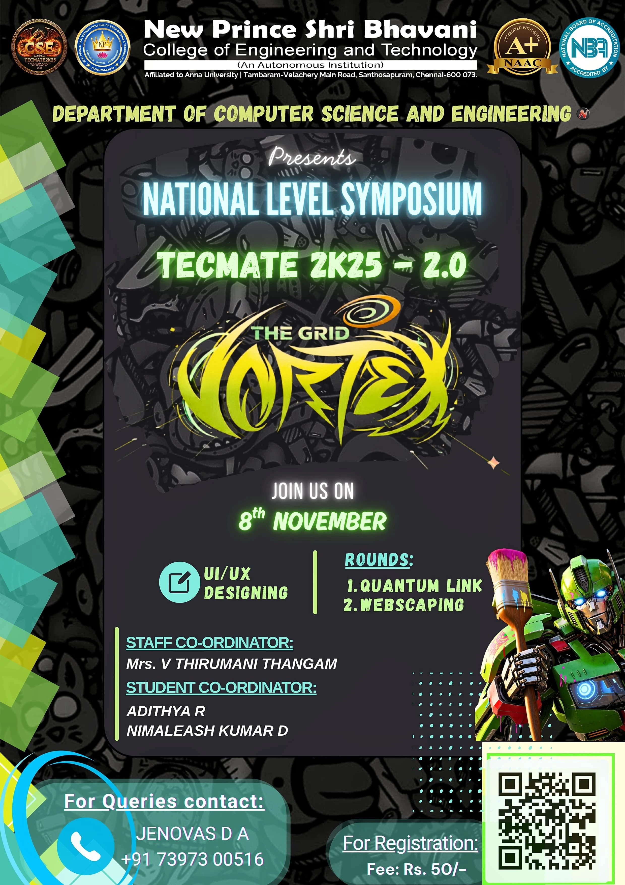

Gear up for Grid Vortex – a high-energy tech challenge designed to test your teamwork, creativity and web designing skills. Participants will face two dynamic rounds, each focusing on different tech abilities.
The first stage of GridVortex focuses on teamwork, quick thinking, and recognizing technology concepts through visual clues. Teams will identify the connection between a series of tech-related images, testing their collaboration and reasoning under time pressure.
The grand finale of GridVortex – a 45-minute challenge to create a fully functional webpage. Teams must develop a front page, login page, and main page, and present their work. Creativity, functionality, and presentation skills will determine the winners.
The team demonstrating the best combination of speed, accuracy, problem-solving, web development, and presentation skills will be crowned GridVortex Champions. Top three teams receive prizes, and all participants earn certificates.
